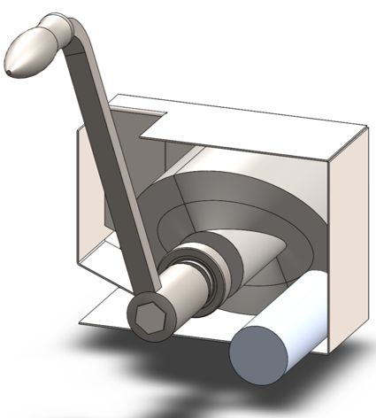

As the consumption of sugary carbonated drinks has increased in recent years, an overwhelming number of aluminum cans have entered waste disposal facilities. To reduce the spatial requirement of the individual cans, we propose a rotationally driven high-throughput can crushing device that operates either via human or machine power to easily deform cans to at least 20% of the original volume. By utilizing a varying thickness wheel, the rotation of the wheel compresses the can against the wall of the device to less than 20% of the volume. The shaft is constructed from AISI 316 while the crushing wheel is cast stainless steel. A finite element study was conducted to validate that the stresses experienced in the design did not surpass the yield stresses of the components. The proposed device solves the issue of crushing cans and allows for automatic reloading to allow for continued operation.
1. Nomenclature
2. Introduction
As the consumption of soda continues to increase internationally, landfills are being overwhelmed by the number of empty cans produced. Current estimates by the EPA predict that 1.9 millions tons of aluminum are produced as beverage packaging [1]. To improve the ability to transport the cans to either a recycling facility or a landfill, the reduction of volume decrease the required space and increase the ability to transport more cans in a single delivery. Creating can crushing mechanisms are either human-powered or complex electro-mechanical machines. The human aspect of the design encourages people to be engaged in the recycling process and be conscious of their choices. However, creating a device capable of being electrically driven allows for the process to be automated and provide a possible means of high throughput crushing.
In the design of the device, an analysis of similar can crushing devices was performed to understand the required features for the desired device. Next, the design was formulated and components were selected from common part providers or were designed to be easily fabricated. To ensure the feasability of the design and materials selection, an analytical analysis of two key points was conducted along with a finite element analysis (FEA) of the entire system at the maximum crushing force fo the can. Lastl, a comparison of the FEA results with the fatigue life of the components ensures that the devices meets the requirements for an infite life design.
3. Development of Engineering Specifications
To develop the specifications for the design, several considerations were made to ensure that the design would be constructed effectively and within the limits of human strength. First, the average pulling force for a human was determined to be 20 lbf which is consistent with NASA standards [christensenman]. In an effort to reduce the environmental impact of the design, the additional constraint of purchasing as many parts as possible without requiring custom fabricated parts. In the final design, less than half of the parts required were custom designed. The remainder were able to be purchased from McMaster-Carr. To determine the required crushing force for an aluminum beverage can, six uniaxial compression tests were conducted and the results are shown in Fig. 1-1. The avereage maximum crushing force was found to be approximately 1.3kN to reduce the can to 20% of the original volume. For the dimensions of an aluminum beverage can, the can was considered to have an original height of 157mm and to achieve 80% reduction in volume, the can would need to be deformed to a thickness of 31.4mm. The dimensions of the can were determined via measurements taken from the beverage cans used in the compression tests. Furthermore, from the project instructions, the final design was required to have te ability to be either mechanically or electrically driven. Additionally, the requirement of having the crushing mechanism automatically reload was added to improve the total throughput of the cans to be crushed. The metric for the human force and crushing force are determined via mechanical analysis. For the material selection, the commercially listed for the components will be used in the design.
4. Sythesis of the Design
In creating the final design of the system, several commercially and custom fabricated can crushing solutions were considered. While the common handle driven can crushing system as shown in Fig. 1-2. While the common lever-based design allows for a can to be easily crushed, the challenge arises in creating an automated and high-throughput can crushing device. The common industrial devices serve to shred rather than compress the aluminum cans for use in recycling facilities. In investigating Do-It-Yourself (DIY) designs, a common method for automating the process is to create a crank-slider mechanism to compress the can. However, the number of moving parts in the design creates a higher likelihood of component failure if the device is operated for long periods of time.
The design of the proposed device functions on the use of a "flywheel" with varying thickness to compress the aluminum can against the wall of the device. The thickness of the flywheel varies in the angularly allowing for a gradual crushing of the can. Once the can has been reduce to 20 of the original volume, the can exits the device via a slot in the bottom of the housing. As the wheel completes a revolution, the opening for a can reaches the can entry location and allows the can to drop into the crushing area. The flywheel is suggested to be made from cast stainless steel. The shaft of the flywheel is hexagonal and purchased from McMasterCarr and is made from AISI 316. In the current iteration, a handle purchased from McMasterCarr is attached to the shaft and a human is expected to provide the required rotational input to the device. However, a coupler could be used to attach the shaft to a motor to improve the rate of compression for the cans. The device is shown in Design of the can crushing device with a potion of the housing cut away to view internal crushing chamber..

5. Deisgn Analysis and Optimization
For analyzing the design of the can crushing mechanism, the analysis was broken down into two type: analytical and FEA. The analytical work focused on two points of interested: a point on the handle, and a point on the cross section of the shaft. Due to the complex geometry of the fly wheel, a FEA was carried out on the part assuming the maximum possible load applied by a human.
5.1. Analytical Methods
5.1.1. Shaft Cross-Section
From Table 6.2 in [3], the equations for the maximum shear stress, \(\tau_A\), and angular deflection, \(\theta\), for a hexagonal cross section. The free body diagram for the torque applied to the shaft is shown in Fig. 1-3. To calculate the shear stress and angular deflection, the equations for shear stress and deflection from the textbook [3] :
where \(T\) is the applied torque, \(a\) is the height of the hexagon, and \(G\) is the modulus of rigidity. From the geometry of the shaft, \(a\) is equal to 1 inch. For AISI 316, the shear modulus is 78GPa. For an applied torque of 220lbf·in, the maximum shear stress is predicted to be 8.646MPa which closely matches the FEA results. Furthermore, the maximum predicted deflection is 2.05 milliradians. The delfection of the rod predicted via this equation is not comparable to the FEA results since the effects of the fly wheel prevent some of the deflection that would be experienced by the shaft.
5.1.2. Handle
The handle of the mechanism is subject to a moment produced by the force applied to the handle(see Fig. 1-4]). Since the cross section of the bar is rectangular, the standard equation for bending applied. At the end of the handle a force of 20 pounds force is applied. The handle has a length of 11 inches with a cross section of 0.75 inches by 0.6 inches. Using the equation for bending stress at point A on the cross section:
where \(M = 20\text{lb}_f*10.125\text{inch} = 202.5\text{lb}_f\cdot\text{inch}\), \(y = 0.375\text{inch}\), and \(I = \frac{1}{12}(0.6\text{inch})(0.75\text{inch})^3\). This gives a maximum normal stress of 24.8MPa. Once again, this closely matches the results determined in the FEA analysis near the point of interest.
5.1.3. Conclusions
Within the brief analytical work conducted, both the shear stress in the shaft and the maximum normal stress are both well below the limits of the material. For the fly wheel, a FEA approach is employed due to the complex geometry of the contact surface with the can. The checks provided by the analytical work confirm that the FEA results are close to the predicted values.
5.2. Finite Element Analysis
6. Conclusions
Bibliography
[1] EPA. Environmental Protection Agency, [Online]. Available: https://www.epa.gov/facts-and-figures-about-materials-waste-and-recycling/aluminum-material-specific-data.